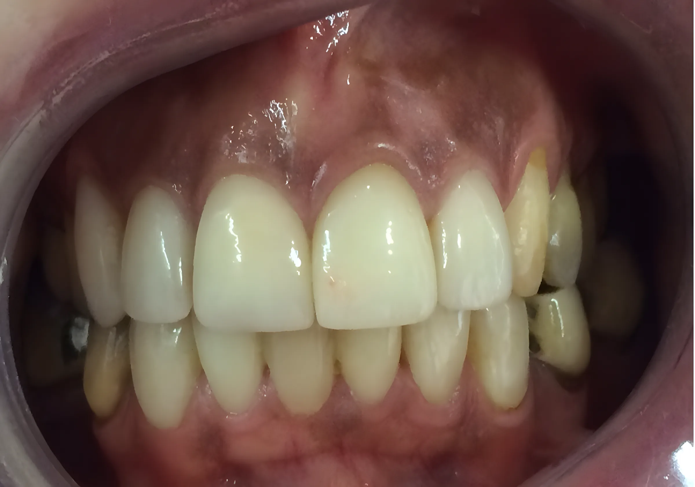
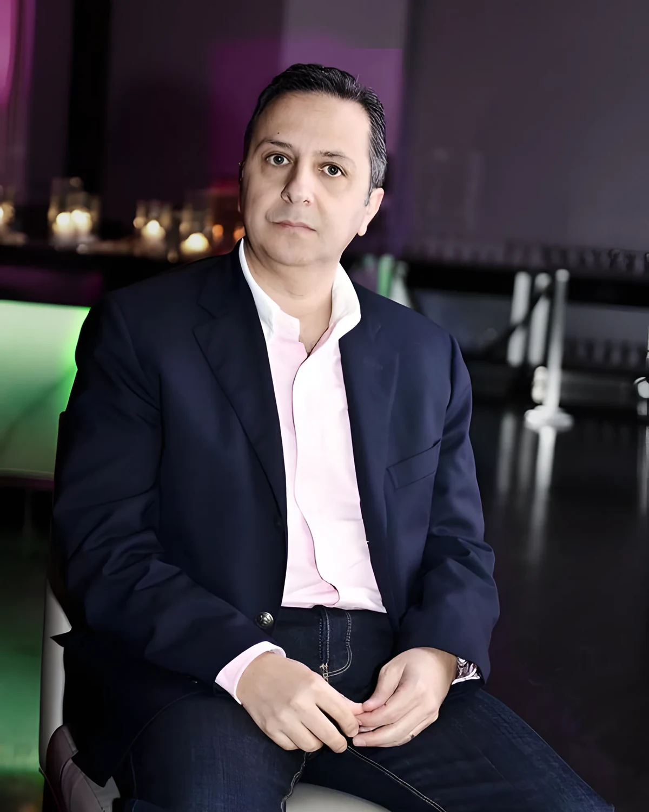
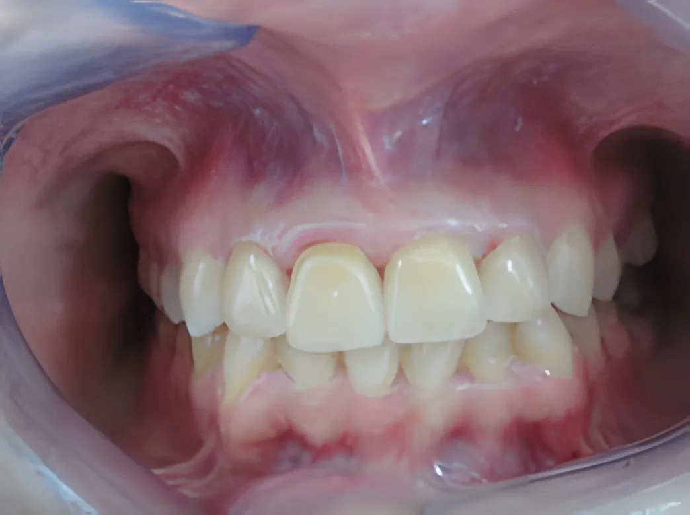

كل ما نقدمه في المركز في اثنتي عشرة مجموعة. الأسعار حسب حالتك، اتصل على 04 394 1881 ونخبرك، أو اسأل الطبيب في الفحص.
الفحص والأشعة
من هنا تبدأ كل زيارة. يفحص الطبيب أسنانك ولثتك، ويأخذ أشعة عند الحاجة، ويشرح لك ما يراه وما يقترحه.
- فحص الفم / الاستشارة
- الأشعة السينية
التنظيف والوقاية
التنظيف المنتظم يحافظ على صحة اللثة ويمنع المشاكل الصغيرة من أن تكبر. الفلورايد وسد الشقوق يحميان أسنان الأطفال؛ اطلب د. رياض باشو، استشاري طب أسنان الأطفال.
- تنظيف الجير وتسوية الجذور
- التنظيف والتلميع
- الفلورايد لكل فك
- سد الشقوق
الحشوات البيضاء
حشوات كومبوزيت بلون السن حسب حجم التسوس، وبناء للأسنان التي فقدت جزءاً كبيراً منها.
- حشوة كومبوزيت درجة أولى
- حشوة كومبوزيت درجة ثانية
- حشوة كومبوزيت لعدة أسطح
- بناء كومبوزيت بمسمار أو بدونه
علاج العصب
السعر حسب عدد القنوات في السن، والحشوة التي تغلق السن بعد العلاج منفصلة.
- قناة واحدة (الأسنان الأمامية)
- قناتان (الضواحك)
- قنوات متعددة (3 أو 4)
علاج اللثة
تنظيف عميق وكحت لأمراض اللثة، وإزالة التصبغات الداكنة من اللثة.
- علاج اللثة والتنظيف العميق
- كحت اللثة لكل ربع
- إزالة تصبغات اللثة


الخلع وجراحة الفم
من الخلع البسيط إلى ضرس العقل والأسنان المطمورة، وجراحات اللثة الصغيرة.
- خلع
- خلع جراحي
- خلع ضرس العقل
- سن مطمور
- كشف جراحي للسن
- قطع اللجام
- تطعيم لثة حر
التيجان والجسور والقشور
تركيبات ثابتة بيد أخصائي التركيبات عندنا. اختر المادة مع الطبيب: بورسلين على معدن، سيراميك بدون معدن، Cercon، أو قشور رقيقة للأسنان الأمامية.
- بورسلين على معدن غير ثمين
- بورسلين على معدن شبه ثمين
- بورسلين على معدن ثمين
- قشور (Laminate veneer)
- تاج سيراميك بدون معدن
- Cercon
- تاج أو جسر أكريليك
- تاج معدني للأطفال

د. وسيم قباني
أخصائي تركيبات الأسنان وطب الأسنان التجميلي. اطلبه بالاسم عند الاتصال.



أطقم الأسنان
أطقم كاملة وجزئية، وما يحافظ على ثباتها: التصليح وإضافة سن والتبطين.
- طقم كامل علوي أو سفلي أو الاثنين
- طقم جزئي أكريليك
- طقم جزئي معدني (Cr-Co)
- تصليح الطقم
- إضافة سن
- تبطين لين أو صلب
مفصل الفك والإطباق
لألم الفك وطقطقته وصرير الأسنان. نحلل حركة الفك ونصنع جبيرة أو واقي ليلي على المقاس.
- تحليل حركة المفصل (Axiographic)
- جبيرة صلبة للاسترخاء
- جبيرة صلبة لإعادة الوضع
- صفيحة إطباق
- جبيرة لينة أو واقي ليلي
الزراعة والتطعيم والتبييض
تعويض الأسنان المفقودة بالزراعة، وتجهيز العظم الذي يسبقها أحياناً، وتبييض الأسنان.
- زراعة
- تطعيم عظم مع غشاء
- ترميم مكان الخلع بعظم وغشاء
- إطالة التاج لكل سن
- تبييض الأسنان
تقويم الأسنان
لتقويم الأسنان وتصحيح الإطباق، اطلب د. بلال قليلات، أخصائي التقويم عندنا.
- استشارة مع د. بلال قليلات، أخصائي تقويم الأسنان
الطب العام
القسم الطبي في المركز. للاستشارة العامة اطلب د. سمر الجارودي، الطبيبة العامة.
- استشارة مع د. سمر الجارودي، طبيبة عامة
اتصل بمركز ريفييرا الطبي وطب الأسنان واحجز موعدك اليوم.
04 394 1881موقعنا
فيلا 956، شارع الوصل، أم سقيم 1، دبي
العنوان البريدي: ص.ب 75141، دبي
اتصل بنا قبل الحضور لمعرفة أوقات اليوم.